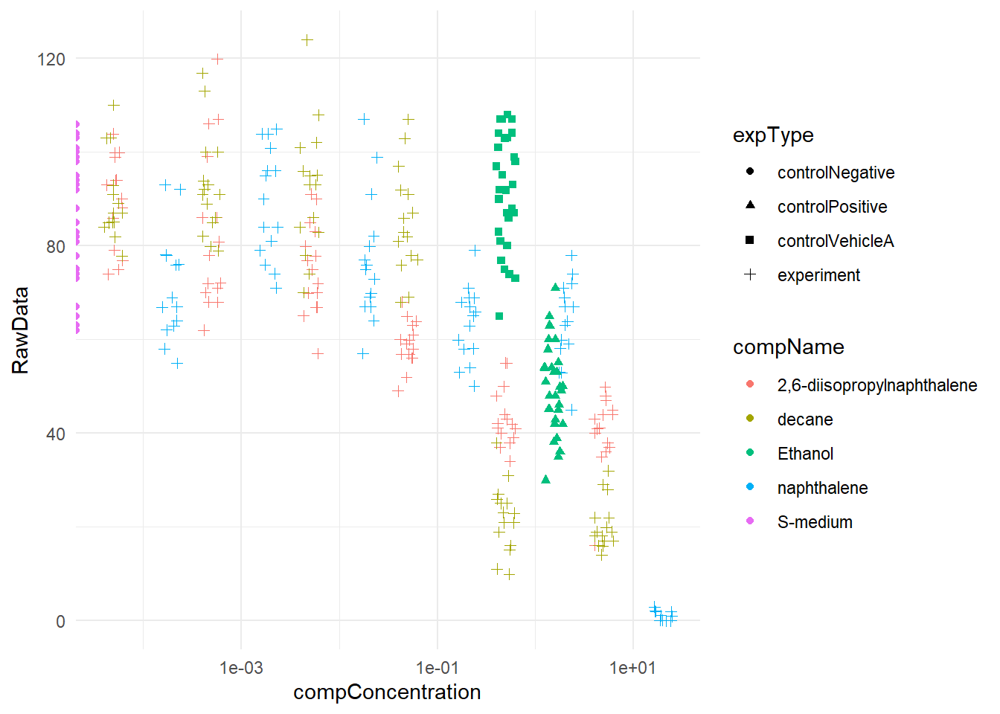
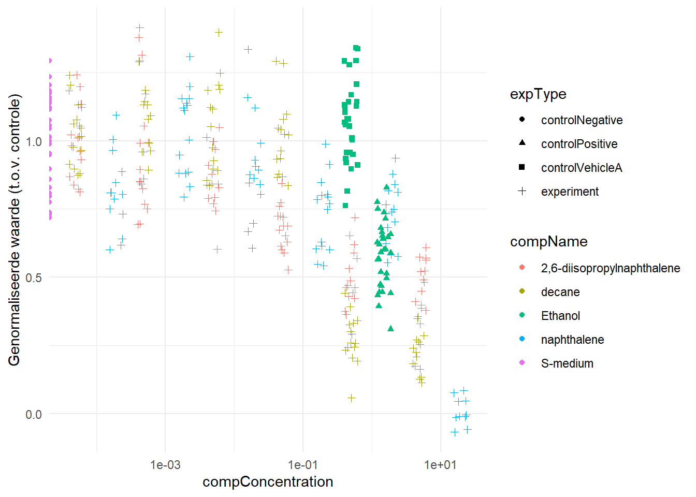
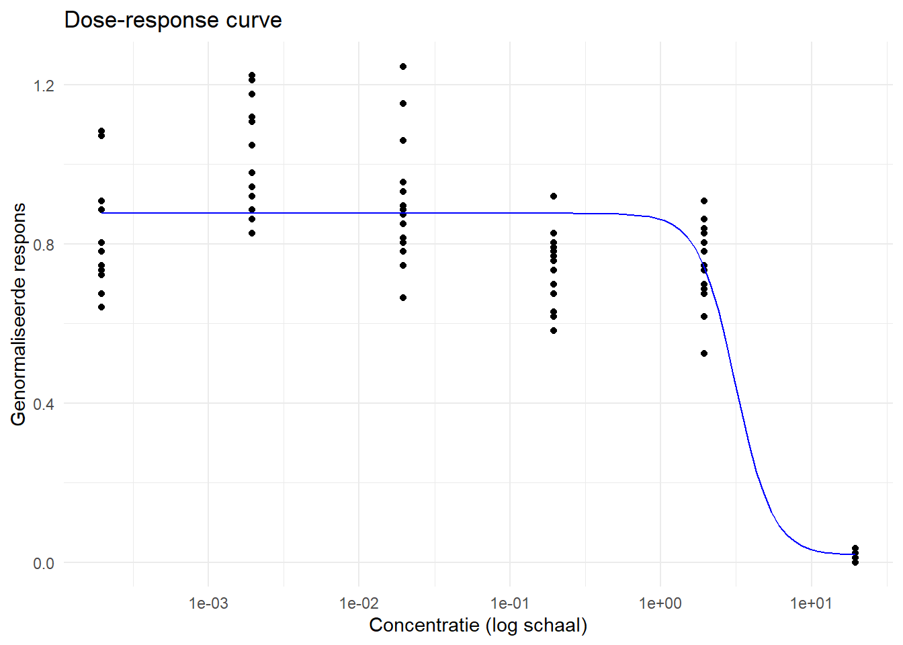

5 Reproducible
5.1 Deel 1
library(readxl)
df <- read_xlsx("Reproducible/CE.LIQ.FLOW.062_Tidydata.xlsx")
sapply(df[c("RawData", "compName", "compConcentration")], typeof)## RawData compName compConcentration
## "double" "character" "character"compConcentration hoort geen character te zijn. concentraties zijn getallen.
Om een grafiek te maken veranderen we de compConcentration eerst in een getal
graph <- df[, c("compName", "compConcentration", "RawData", "expType")]
#Eerst compConcentration veranderen naar numeric.
graph$compConcentration <- as.numeric(graph$compConcentration)## Warning: NAs introduced by coercion#Een waarde wordt geteld als NA, dit kwam omdat een waarde met , was opgegeven.
#Dit veranderen we met deze command gelijk voor de hele column
graph$compConcentration <- gsub(",", ".", graph$compConcentration)
#Nu kan de column verandert worden tot numeric
graph$compConcentration <- as.numeric(graph$compConcentration)
graph## # A tibble: 360 × 4
## compName compConcentration RawData expType
## <chr> <dbl> <dbl> <chr>
## 1 2,6-diisopropylnaphthalene 4.99 44 experiment
## 2 2,6-diisopropylnaphthalene 4.99 37 experiment
## 3 2,6-diisopropylnaphthalene 4.99 45 experiment
## 4 2,6-diisopropylnaphthalene 4.99 47 experiment
## 5 2,6-diisopropylnaphthalene 4.99 41 experiment
## 6 2,6-diisopropylnaphthalene 4.99 35 experiment
## 7 2,6-diisopropylnaphthalene 4.99 41 experiment
## 8 2,6-diisopropylnaphthalene 4.99 36 experiment
## 9 2,6-diisopropylnaphthalene 4.99 40 experiment
## 10 2,6-diisopropylnaphthalene 4.99 38 experiment
## # ℹ 350 more rowslibrary(ggplot2)
library(dplyr)
graph %>% ggplot(aes(x = compConcentration, y = RawData, color = compName, shape = expType)) +
geom_jitter(width = 0.1, height = 0.1) +
scale_x_log10() +
theme_minimal()## Warning in scale_x_log10(): log-10 transformation introduced infinite values.## Warning: Removed 6 rows containing missing values or values outside the scale range
## (`geom_point()`).
library(dplyr)
library(ggplot2)
#Stap 1: Bereken de gemiddelde waarde van de control_negative
mean_control_negative <- graph %>%
filter(expType == "controlNegative") %>%
summarise(mean_value = mean(RawData, na.rm = TRUE)) %>%
pull(mean_value)
#Stap 2: Normaliseer de data, zodat de negatieve controle gemiddeld 1 is
graph_normalized <- graph %>%
mutate(normalized_RawData = RawData / mean_control_negative)
#Stap 3: Maak een scatter plot met de genormaliseerde waarden
graph_normalized %>%
ggplot(aes(x = compConcentration, y = normalized_RawData, color = compName, shape = expType)) +
geom_jitter(width = 0.1, height = 0.1) +
scale_x_log10() +
theme_minimal() +
labs(y = "Genormaliseerde waarde (t.o.v. controle)")## Warning in scale_x_log10(): log-10 transformation introduced infinite values.## Warning: Removed 6 rows containing missing values or values outside the scale range
## (`geom_point()`).
Er zijn 3 controles gedaan tijdens het onderzoek.
De negatieve controle is in dit geval een ‘normale’ situatie waarin de C. elegans kan leven. Deze test is gedaan om te kijken of de C. elegans wel bruikbaar zijn.
Er zijn 2 positieve controles uitgevoerd.
De verwachting voor de controlPositive was dat er door de ethanol die toegevoegd werd C.elegans doodgaan en het aantal nakomelingen dus daalt.
De controlVehicleA is een controle om te onderzoeken of het wel de toegevoegde stof is die effect heeft, of dat het medium waarin de stof wordt opgelost ook invloed heeft.
In dit geval kan dus bevestigt worden dat de controlVehicleA juist is. Als de te testen stof niet word toegevoegd zijn het aantal nakomelingen bijna hetzelfde als de controlNegative.
De negatieve controle is gebruikt om de data te normaliseren. Dit is gedaan zodat het makkelijker is om de data te vergelijken met elkaar. Op deze manier kan de data vergeleken worden zonder dat er alleen naar vaste waarden wordt gekeken. Zo wordt gekeken naar de effecten van de stoffen ten opzichten van de normale situatie van C. elegans.
Voor een vervolgonderzoek Zou kunnen worden gekeken naar de IC50 en LC50. Hieronder een stappenplan om de IC50 van een stof te visualiseren.
Stap 1: Een stof die je wilt onderzoeken kiezen. De andere stoffen moeten eruit worden gefilterd voor de dose-response curve van een stof. Stap 2: De drc package heeft een functie om een log-logistisch model te maken. Dit is de drm functie. Stap 3: Gebruik de predict() functie van de drc package om een voorspelling te maken over de dosis range. Stap 4: Nu de voorspellingen in een R object staan kan een plot worden gemaakt. Dit kan gedaan worden met ggplot2 of een andere plot package naar wens. Hieronder een voorbeeld van een gecodeerd stappenplan.
#Let op!!!
#Hier staat een voorbeeld van het stappenplan.
#Dit voorbeeld is gecodeerd door chatgpt!!!
# Installeer en laad het pakket
install.packages("drc") # alleen de eerste keer nodig## package 'drc' successfully unpacked and MD5 sums checked
##
## The downloaded binary packages are in
## C:\Users\justu\AppData\Local\Temp\RtmpIpRd8h\downloaded_packageslibrary(drc)
library(ggplot2)
library(dplyr)
# Filter data voor één stof (bijvoorbeeld 'compoundA')
data_filtered <- graph_normalized %>% filter(compName == "naphthalene")
# Pas een log-logistisch model toe
model <- drm(normalized_RawData ~ compConcentration, data = data_filtered, fct = LL.4())
# Toon samenvatting van het model (inclusief EC50)
summary(model)##
## Model fitted: Log-logistic (ED50 as parameter) (4 parms)
##
## Parameter estimates:
##
## Estimate Std. Error t-value p-value
## b:(Intercept) 3.529803 NaN NaN NaN
## c:(Intercept) 0.018190 0.043010 0.4229 0.6735
## d:(Intercept) 0.876317 0.019721 44.4366 <2e-16 ***
## e:(Intercept) 3.128989 NaN NaN NaN
## ---
## Signif. codes: 0 '***' 0.001 '**' 0.01 '*' 0.05 '.' 0.1 ' ' 1
##
## Residual standard error:
##
## 0.1513537 (80 degrees of freedom)# Genereer predicties voor de plot
dose_range <- data.frame(compConcentration = exp(seq(log(min(data_filtered$compConcentration, na.rm = TRUE)),
log(max(data_filtered$compConcentration, na.rm = TRUE)), length.out = 100)))
dose_range$predicted <- predict(model, newdata = dose_range)
# Maak de dose-response plot
ggplot(data_filtered, aes(x = compConcentration, y = normalized_RawData)) +
geom_point() +
geom_line(data = dose_range, aes(x = compConcentration, y = predicted), color = "blue") +
scale_x_log10() +
theme_minimal() +
labs(title = "Dose-response curve", x = "Concentratie (log schaal)", y = "Genormaliseerde respons")
5.2 Deel 2
Het gebruikte artikel wat gevonden is op PLOS One. Ik heb gebruikt als zoektermen; All fields: SARS-Cov-2 en data availibility: R code. (Zaaraoui et al., 2024)
Onderdeel 1
De onderzoeksvraag: Welke soort antivirale behandeling is het meest effectief om verspreiding te voorkomen.
De onderzoekers hebben een formule gemaakt voor de snelheid waarmee een geinfecteerde cel nieuwe virussen maakt. Deze formule zou rekening houden met het imuunsysteem. Een formule voor de verspreiding van het virus, deze formule houdt rekening met hoeveel nieuwe virussen zijn gemaakt, en hoe ‘erg’/dichtbij het contact is. Als laatst is een formule gemaakt die kijkt naar hoe effectief een behandeling is bij het remmen van productie van nieuwe virussen. De laatste formule heeft dus invloed op de andere twee. Data van het National Basketballs association’s cohort is gebruikt met data over SARS-CoV-2. Deze data is ingevoerd in de formules. Er zijn verschillende scenario’s met andere tijdstippen van behandeling.
Onderdeel 2
Aangezien een groot deel van het gekozen artikel is gemaakt online, en de data komt uit een ander onderzoek worden de kopjes die te maken hebben met de data bekeken bij het originele onderzoek.
Beoordeling van het artikel:
Study Purpose: Yes Data Availibility Statement: Yes Data Location: Github repository link on PLOS. Study Location: No, Er wordt op een github verwezen naar de University of Washington, Department of Medicine en de Fred Hutchinson Cancer Center, Vaccine and Infectious Diseases Division, al staat er niet bij of hier het onderzoek is uitgevoerd om de raw data te verkrijgen. Author Review: No, alleen bij het originele onderzoek. Ethics Statement:No Funding Statement: Yes Code Availibility: No (Wel met omweg naar het originele onderzoek waar de data met R is bewerkt)
Onderdeel 3
De R code die het artikel beweert te gebruiken kom vanuit een ander onderzoek waar de data is bewerkt met R. Deze R code is wel gevonden. Het artikel heeft niet benoemd dat het artikel waar de data van is er bij benoemd dat er een werkende versie van Stan en C++ toolchain geinstalleerd hoort te zijn.
Toch lijkt het eerste script op github alleen R te gebruiken. Dus ga ik proberen de R code te runnen. Er staat in het onderzoek een R script waarmee de eerste 2 figuren zouden moeten worden gemaakt.
Er wordt een onderzoek gedaan naar antistof hoeveelheden op moment van infectie en na een tijdje. Deze waardes worden vergeleken met mensen die gevaccineerd zijn, gevaccineerd worden tijdens het onderzoek of niet gevaccineerd zijn. Ook wordt er onderscheidt gemaakt tussen de soort vaccinatie.
Eerst wordt de data gecleaned. Er wordt een soort infectie uit gefilterd. Ook worden een aantal kolommen aangepast omdat de data nog niet goed staat voor verdere analyses. Er worden negatieve variabele en NA’s uit gefilterd.
Er is een functie gemaakt om snel de gemiddelde antistof-titer waardes te schatten door het gemiddelde vaak opnieuw te berekenen net anders.
Er worden een plots gemaakt waarin te zien is hoe lang het duurt van infectie tot symptomen, of er een vertraging zit in het hoogste punt van de virale infectie vergeleken met wanneer de symptomen verschijnen.
Een groot deel van de code bewerkt de data om een plot te maken waarmee de richting van de Ct waardes over de tijd worden aangewezen. Hier zijn ook weer verschillende plots gemaakt op basis van soort vaccinatie, leeftijdscategorie en antilichaam titer.
Er zijn erg veel lines aan code geschreven om variabelen te kopelen. Hiermee kan een regressie model worden gemaakt om bijvoorbeeld p waardes te berekenen. Er kan gekeken worden naar of de soort vaccinatie invloed heeft op het verschijnen van symptomen of de curve/richting van de Ct waardes over de tijd.
Na veel van de code zijn er een paar lines geschreven om de gemaakte plots of R objecten naar nieuwe files te kopiëren.
Aan het einde zijn er een paar plots gemaakt die voorbeelden geven van de infectie curve bij een aantal van de patiënten.
Ik beoordeel de leesbaarheid met een 3.
De code is best goed te lezen maar er zouden meer comments in mogen zijn verwerkt om stappen uit te leggen. Ook zijn vooral aan het einde hele lange stukken geschreven om plots te maken. Dit zou voor mijn gevoel ook makkelijker kunnen of met een functie gedaan moeten worden aangezien er plots bij zitten die herhalend zijn met andere data.
Ik heb zelf de data gedownload en het eerste script uitgeprobeerd. Dit heb ik gedaan door het script in een nieuwe Rmarkdown te zetten en met juiste verwijzingen te knitten. Ook waren de lines eruitgehaald waarmee de R objecten steeds opgeslagen werden in nieuwe files.
Er waren wel een paar lines die te maken hadden met de soort patiënten. Deze lines hadden te maken met nonplayers. Dit was omdat de ‘players’ en ‘nonplayers’ anders gereguleert waren voor het testen, daarom dat deze werden gescheiden.
Met de aangepaste paths naar mijn eigen gedownloade data bestand werkte het script meteen.
Hierom geeft ik het artikel op reproduceerbaarheid een 5. (Houd er rekening mee dat het artikel wat ik hier gebruik de data gebruikt van een ander onderzoek, eigenlijk is dat andere onderzoek dus erg reproduceerbaar)